信息收集
在拿到一个域名资产的时候首先要做的就是信息收集。毕竟大师傅们都说，渗透测试的本质是信息收集。
1. whois查询
whois查询在对中小网站进行测试时很有用。通过whois查询可以知道域名注册人信息和注册邮箱。
对自己域名查询一下：
1.1 在线查询
这里使用爱站在线查询：http://whois.chinaz.com/
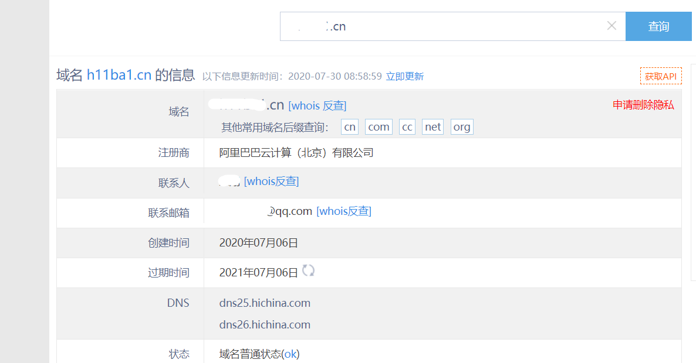
淦！真实姓名和部分邮箱都暴露了
whois在线查询网站：
（下面五个网站，连我完整qq都查出来了，恐怖如斯）
https://www.zzy.cn/domain/whois.html
http://www.dns.com.cn/show/domain/whois/index.do
更多在线查询网站：
西部数码域名WHOIS信息查询地址：https://whois.west.cn/
新网域名WHOIS信息查询地址：http://whois.xinnet.com/domain/whois/index.jsp
中资源域名WHOIS信息查询地址：https://www.zzy.cn/domain/whois.html
三五互联域名WHOIS信息查询地址：https://cp.35.com/chinese/whois.php
爱名网域名WHOIS信息查询地址：https://www.22.cn/domain/
一个网站查不出来的时候，多试几个总没坏处，万一呢
1.2 工具查询
工具查询可以使用kali自带的whois查询工具
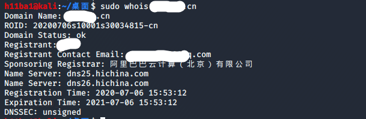
1.3 收集信息的利用
讲了这么多，最终还是要把收集的信息利用起来。根据whois对域名的查询。现在我们已经知道了以下信息
- 域名注册者（一般就是站长）姓名
- 域名注册者邮箱
- 域名注册商
- 域名注册时间
知道域名注册者姓名，注册者邮箱和域名注册时间。我们就可以根据这些信息制作用户名，密码爆破字典。
特别是这里还使用了qq邮箱，那么可以直接添加qq好友，进行社会工程学攻击。
这里简单演示一下密码爆破字典的制作：
为了获取更多信息，可以直接添加qq，套出更多信息。这里只简单添加好友获取一下受害者的出生日期。
很多人的密码组合都是用户名+出生日期。
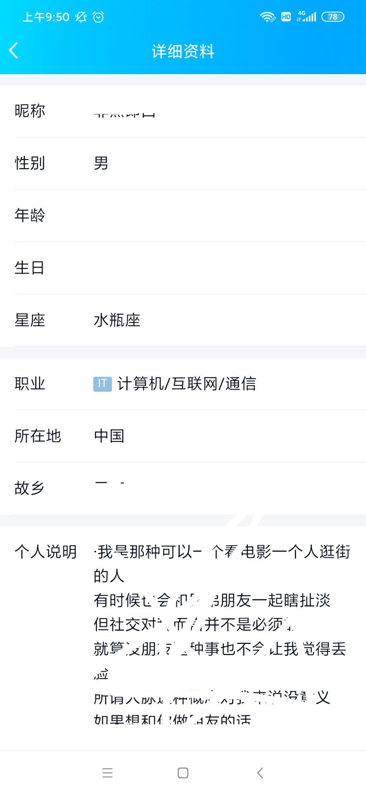
那么现在我们已经知道了受害者的，姓名，邮箱，出生日期。这是就可以使用社工工具生成密码字典
这里使用pydictor （这个工具除了，生成密码字典，还有很多实用的功能，如合并去重，批量添加指定前缀…等等)
github地址：https://github.com/LandGrey/pydictor/blob/master/README_CN.md
python3运行：
1 | python pydictor --sedb |
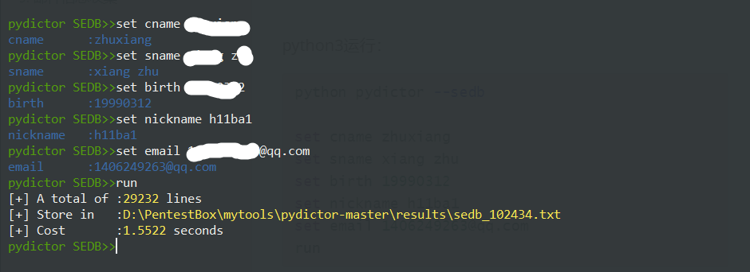
密码生成到了results文件夹里面
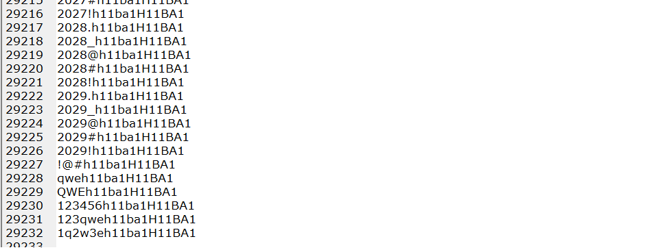
最终在其中找到了以前用的密码…..
2.子域名收集
子域名的收集可以在主站(www开头，如www.baidu.com) 难以攻破的情况下，找寻更多的攻击面
子域名常用收集方法：
- 工具收集
- google语法收集
- fofa收集
2.1工具收集
比较常用的收集工具是：
oneforall : https://github.com/shmilylty/OneForAll
subDomain : https://github.com/lijiejie/subDomainsBrute
layer子域名挖掘机：这个网上搜索一下有，或者找我要（总感觉小网站下载的东西都有后门）
oneforall：
个人比较习惯使用搭建在服务器上面的dokcer版
1 | // 拉去docker 镜像 |
在自己电脑上安装使用也很不错，个人习惯问题~
subDomain：
1 | python2 subDomainsBrute.py baidu.com |
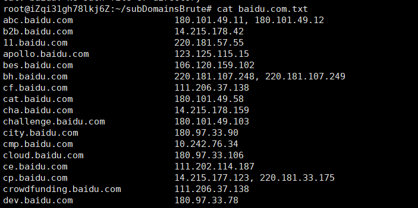
2.2 搜索引擎语法搜索子域名
google 语法：
1 | site:"baidu.com" -www |
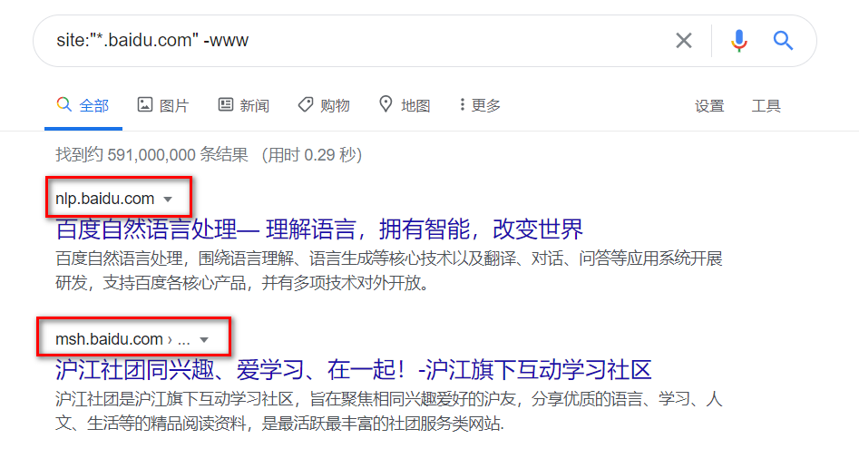
百度语法：
1 | site:bilibili.com link:bilibili.com |
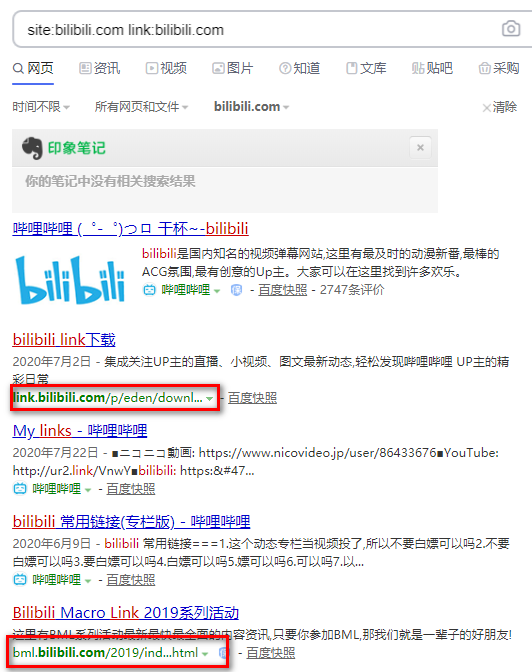
必应语法：
1 | site:baidu.com |
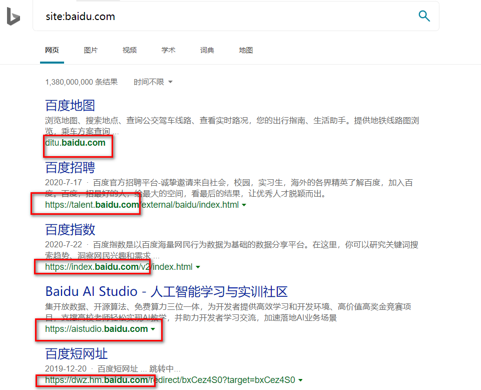
2.3 空间搜索引擎搜索
fofa搜索子域名：
1 | domain="qq.com" |
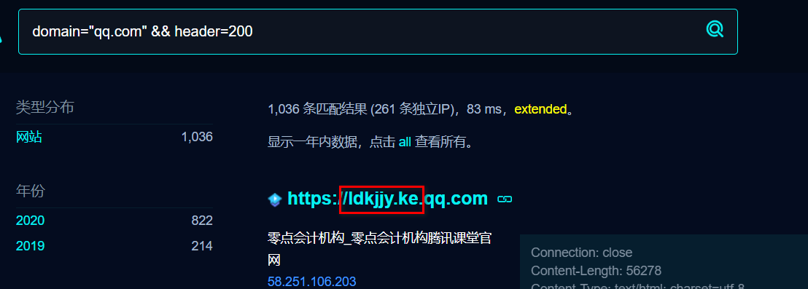
添加&&header=200可以过滤404子域网站。
其他的空间搜索引擎还有shodan,zoomeye，和安恒的sumap
2.4 收集子域名的利用
子域名去重：
因为我们使用了多个工具收集子域名，收集的信息肯定会有很多重复之处，此时可以使用pydictor这个工具去重
将所有需要合并去重的txt文件放到test目录下，执行
1 | python pydictor.py -tool uniqbiner .\test\ |
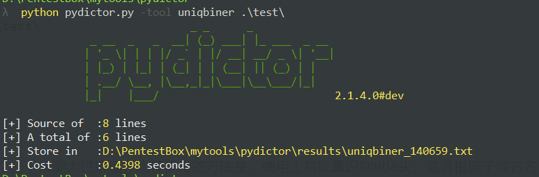
最终在results目录下即可找到合并去重的文件内容。输出位置也可以使用 -o 指定
子域名批量识别：
收集到的子域名，在大型站点中通常会很多，一个一个检测太过麻烦，比较优雅的方法是，使用工具批量识别title头，或者根据子域名名称来判断站点重要性。如（vpn，login，email等子域名一眼看过去就感觉很有价值）
批量识别工具：https://github.com/TheKingOfDuck/domain_screen
工具有点问题，后面修一下。
TODO
批量识别title信息：
批量识别ip及运营商：
https://zh.infobyip.com/ipbulklookup.php
3. 真实ip发现
目前很多大型网站都使用了cdn服务，这就导致直接ping域名得到的ip可能不是真实ip。
cdn本身不是为了安全防御，但在一定程度上能够抵御安全攻击。因为直接访问的是cdn服务器，sql注入，命令执行之类的漏洞都是在cdn服务器上面执行，但是cdn服务器只是缓存了静态资源，并没有漏洞程序，所以在对具有cdn的服务器进行攻击时，漏洞可能无法利用成功。（个人理解，这方面一直不太熟，后面研究研究）
TODO
这篇文章说的 很不错，推荐看一下
4. cms，中间件信息收集
在渗透测试时，如果能够快速识别出cms和中间件信息，能够直接秒杀。
常规cms识别的方法：
- 云悉识别
- wappalyzer 插件
- 佩恩平台识别
- 潮汐指纹识别
- kali whatweb
4.1.云悉指纹识别
最好用的应该是云悉平台的指纹识别，但是云悉平台需要邀请码….邀请码有点难弄到
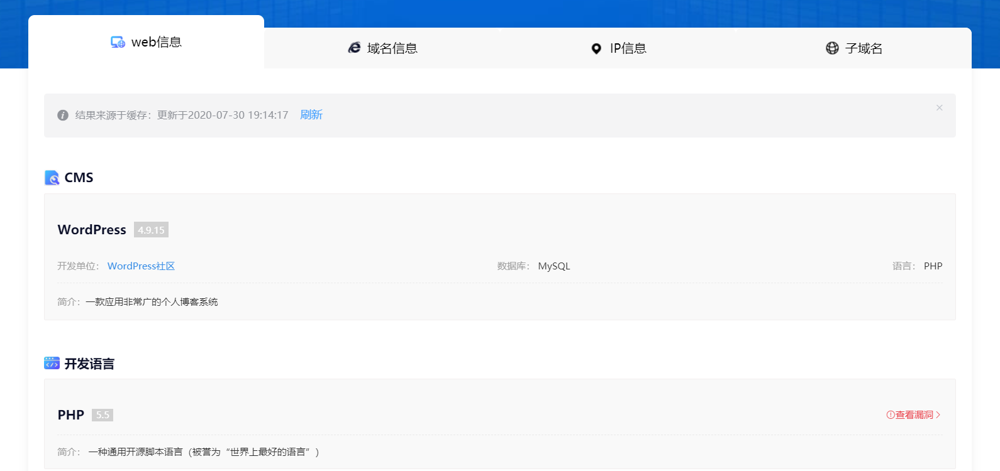
4.2.wappalyzer 插件
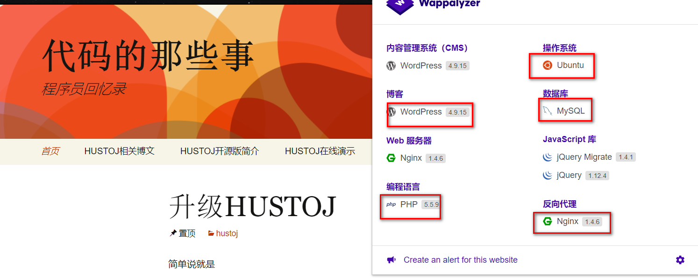
像我老师网站，信息直接全部暴露~（主要是他的博客是我见过wappalyzer 识别信息最全的….wappalyzer 插件针对国内cms有点水土不服)
顺便给他项目打个广告：
https://github.com/zhblue/hustoj
4.3 佩恩平台识别
需要投稿四篇才有初级使用权限….
不足四篇也可以搜索别人搜索过的资产，例如baidu.com。这个信息收集绝对是最全的……

4.4 潮汐指纹识别
4.5 whatweb
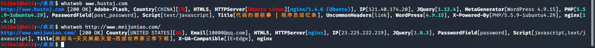
whatweb对国外cms，如：wordpress，joomla等国外cms识别效果还是不错的。但是遇到国内的cms，如tp框架，dz等cms效果就不好了…
4.6 cms信息的利用
识别了cms，快速找出对应cms的爆发过的漏洞，进行验证
快速找出cms漏洞方法有：
- 零组知识库查找
- cnvd 国家信息安全共享平台查找
- cve搜索
- 知识库搜索
4.6.1零组知识库信息
基本所有公开的cms漏洞，利用方式都能从这里找到。
网站：https://wiki.0-sec.org/#/md（需要邀请码，我还有一枚...）
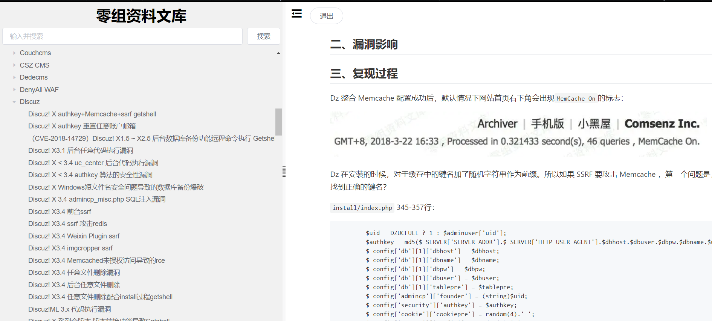
4.6.2 cnvd查找cms漏洞
https://www.cnvd.org.cn/flaw/list.htm?flag=true
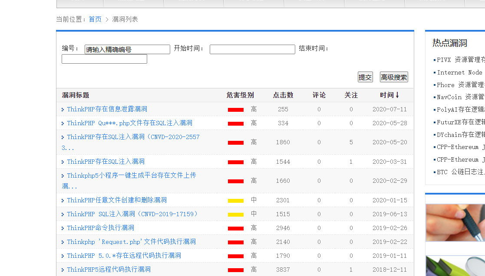
4.6.3 相关cve搜索
https://cve.mitre.org/cve/search_cve_list.html
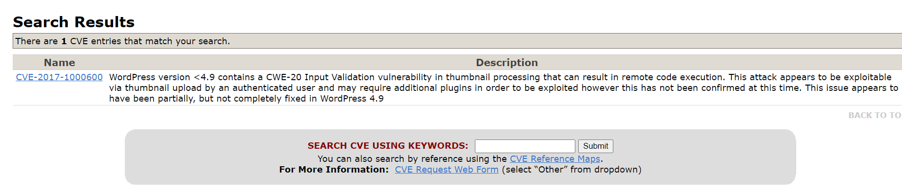
4.6.4 安恒知识库搜索
大佬们写了几千篇文章，基本什么类型的cms，都有：
http://greatagain.dbappsecurity.com.cn/#/book?id=1072&type_id=1
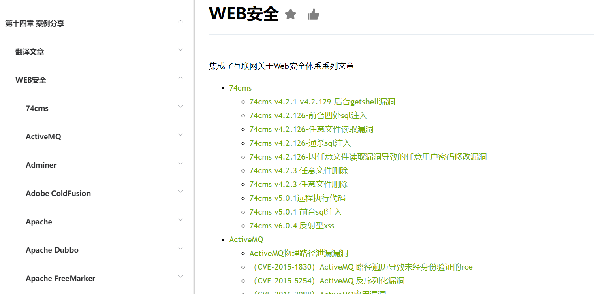
5. 路径敏感信息收集
路径扫描主要靠工具收集。常用的有工具有：
- awvs13 爬虫，爬取路径
- dirbuster
- dirsearch (后面课程会讲到这个工具)
- 御剑
- javascript文件中的链接提取（真的好用）
5.1 awvs13爬虫探测
5.2 dirbuster
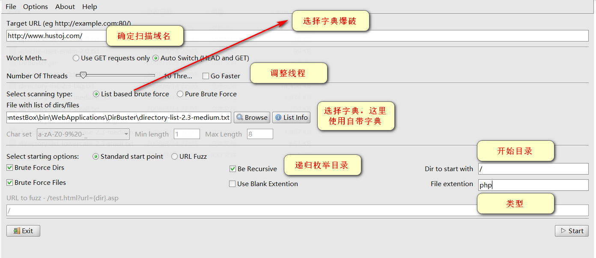
dirbuster比较好的点就是能够可视化的看到，爆破出来的路径，还可以自由勾选要枚举的路径，还有设置代理之类的功能，总体还是蛮好用的。
爆破结果：
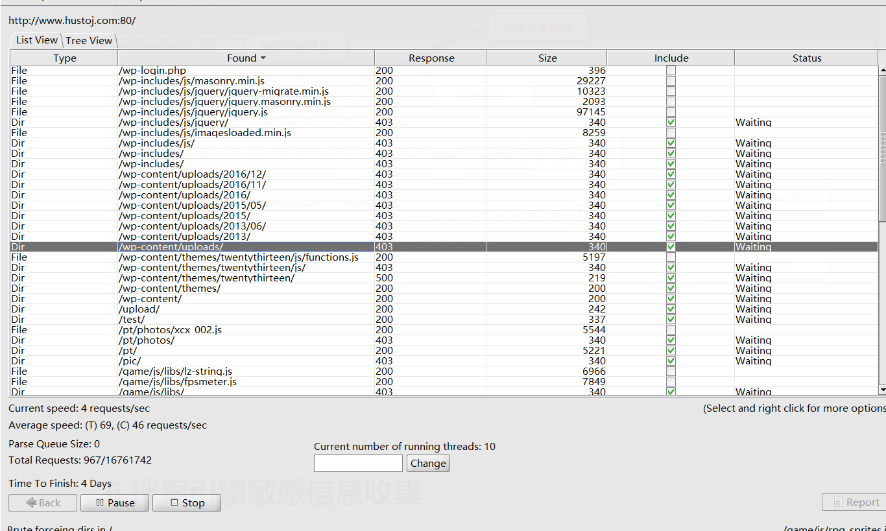
5.3 dirsearch(后面课程要用…)
https://github.com/maurosoria/dirsearch
因为是国外的工具，自带的字典在国内都不太好用，可以根据该文章修改一下字典：https://dfkan.com/1469.html
简单爆破一下路径:
1 | dirsearch -u http://www.hustoj.com/ -e php |
5.4 御剑（上古级神器了，线程一开大，就容易卡死…)
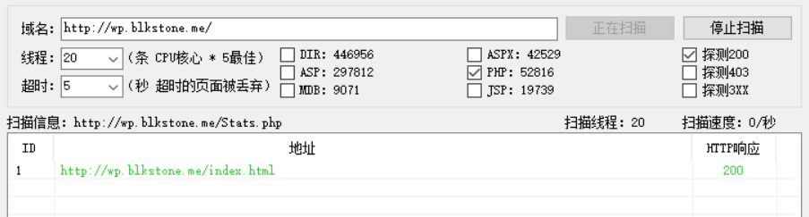
也不支持代理，简单了解即可…
5.5 javascript文件中的链接提取（真的好用）
jsfinder提取url:
https://github.com/Threezh1/JSFinder
该工具能够爬取指定网站中所有的js文件，并查找其中的路径
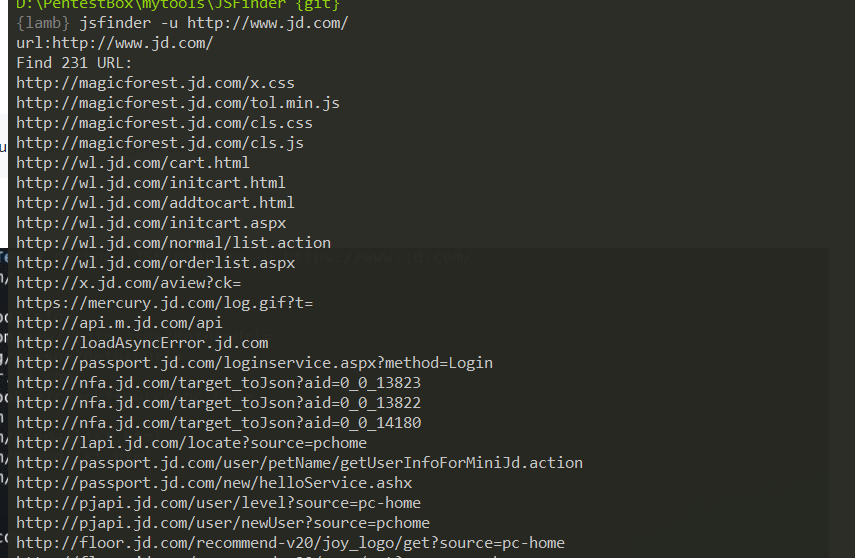
LinkFinder 提取节点
https://github.com/GerbenJavado/LinkFinder
1 | python3 linkfinder.py -i http://www.hustoj.com/ -d -o test.html |
提取效果还是不错的。
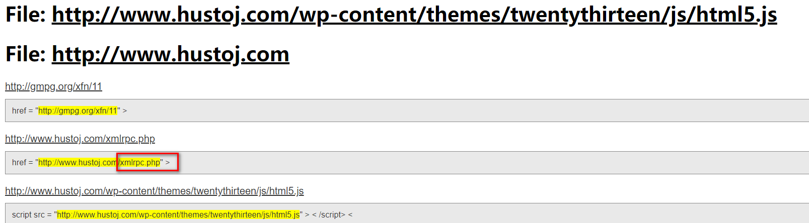
6.搜索引擎敏感信息收集
搜索引擎在使用特定语法时能够，收集到很多敏感信息
6.1 googlehacking
这里因为篇幅问题主要记录google搜索语法。在很多时候使用 百度，必应也有意想不到的效果。
site: 限制域名的搜索范围
1 | site:baidu.com |
inurl：用于搜索含有特定值的url
在搜索一些通用cms漏洞时特别好用。cms通用漏洞，url都是固定的，直接搜索很容易找到。
1 | inurl:/phpinfo.php |
也可用来发现后台：
1 | site:域名 inurl:login|admin|manage|member|admin_login|login_admin|system|login|user|main|cms |
intext：搜索网页中包含的文字（忽略，title，url等）
intext主要用来配合site，搜索指定网站中存在的敏感信息。
1 | site:域名 intext:管理|后台|登陆|用户名|密码|验证码|系统|帐号|admin|login|sys|managetem|password|username |
filetype：搜索文件的后缀或者扩展名
filetype常用来和site组合使用，通过添加
1 | site:cuz.edu.cn filetype:xls |
收获一堆学号用户名….淦，可怜的文学院。
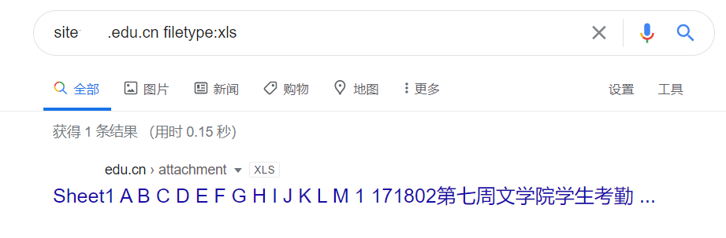
常搜索的后缀：
1 | xls|txt|docx|pptx|pdf|sql|mdb|zip|rar |
intitle：搜索指定的title标题
intitle常用来搜索诸如，后台|login|管理 之类的关键字，可用来快速发现后台系统。
常用关键字：
1 | 管理|login|后台|登陆|注册|register|admin|等 |
link：搜索包含了某个指定url的页面列表
link可以用来收集子域名，如：
1 | site:baidu.com link:baidu.com -www |
6.1.7 常用搜索组合：
1 | 查找后台地址：site:域名 inurl:login|admin|manage|member|admin_login|login_admin|system|login|user|main|cms |
6.1.8 各种敏感数据收集：
1 | filetyle:xls inurl:gov username password |
6.2 网盘信息搜索（这个很强）
网盘搜索网上没看到有多少人提，第一次知道还是来自安恒一个师傅教的，亲自看大佬，信息收集进某高校内网。
因为某度网盘的广泛使用，网盘中可能会存储很多敏感信息。
这里主要使用凌风云搜索：https://www.lingfengyun.com/
成堆的学号，用户名….恐怖如斯好吧…
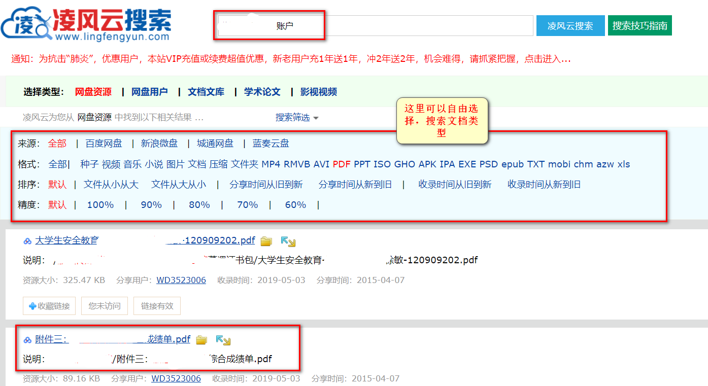
其他的网盘搜索 引擎：https://www.chaonengsou.com/。这个搜索引擎也就是iframe嵌套了其他搜索引擎，也可以尝试一下。反正凌风云🐮🍺。
7. github信息收集
很多程序员，会将自己为企业开发的代码直接上传到github。代码中的，敏感信息，配置文件等都没有更改。攻击者很容易就可以通过，域名，作者id等信息在github搜索到源码。
7.1 github常用语法
1 | in:name test #仓库标题搜索含有关键字 test |
尝试搜索一下赵师傅的项目：
in:name glzjin
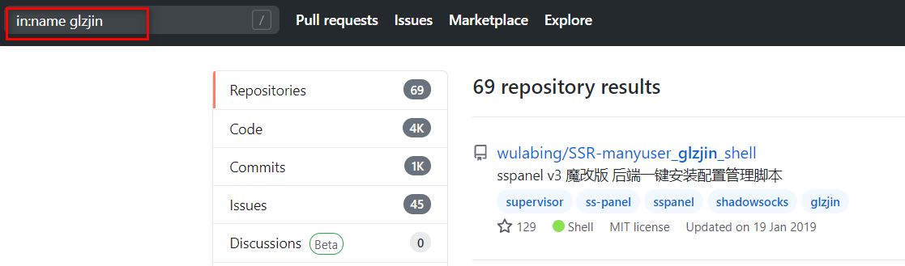
1 | user:ccjpp #搜索指定用户名的所有代码 |
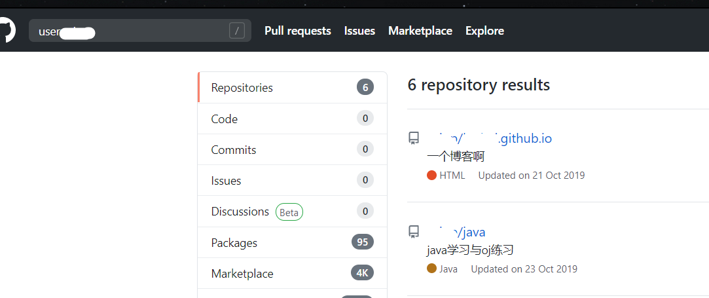
写过的所有渣代码暴露….
7.2 搜索敏感信息
这篇文章总结的很好：信息收集之Github搜索语法
简单演示：
随便尝试一下:
1 | site:qq.com String password smtp |
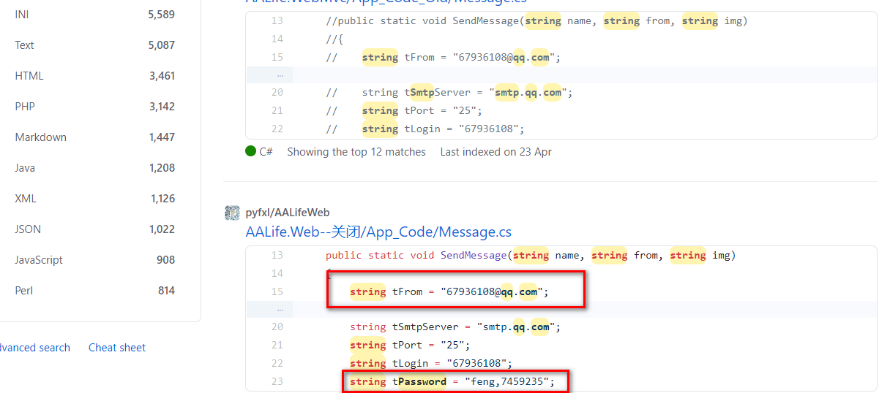
一个信息收集工具：GitHub敏感信息采集工具GSIL
8. dns信息收集
没试过dns信息收集，不会
TODO
可以参考链接：
https://zhuanlan.zhihu.com/p/110404620
9. 邮件信息收集
找邮件，目前只知道whois查询，网页中提取含有邮箱格式（xxx@xxx格式）的参数，或者google，github信息收集也许也能收集到。
参考链接：
 alipay
alipay